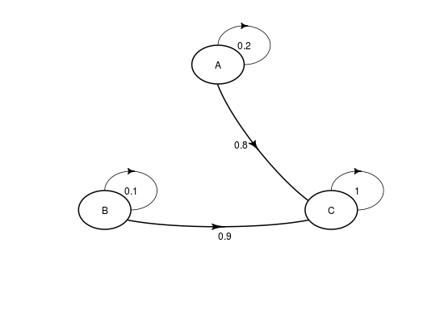

Define a matrix of transition probabilities. Probability
can depend on parameters defined with
define_parameters(), and can thus be time-dependent.
define_transition(..., state_names) define_transition_(.dots, state_names) # S3 method for uneval_matrix modify(.OBJECT, ...) # S3 method for uneval_matrix plot(x, relsize = 0.75, shadow.size = 0, latex = TRUE, ...)
| ... | Name-value pairs of expressions definig matrix
cells. Can refer to parameters defined with
|
|---|---|
| state_names | character vector, optional. State names. |
| .dots | Used to work around non-standard evaluation. |
| .OBJECT | An object of class |
| x | An |
| relsize | Argument passed to |
| shadow.size | Argument passed to
|
| latex | Argument passed to |
An object of class uneval_matrix (actually a
named list of lazy expressions).
Matric cells are listed by row.
Parameters names are searched first in a parameter object
defined with define_parameters() and linked with the
matrix through define_strategy(); then in the
environment where the matrix was defined.
The complementary probability of all other row
probabilities can be conveniently referred to as C.
The matrix code can be re-indented for readability with
reindent_transition().
Only matrix size is checked during this step (the matrix must be square). Other conditions (such as row sums being equal to 1) are tested later, during model evaluation.
For the modify function, existing matrix cells are
replaced with the new expression. Cells are referenced by
name. Cell naming follows the cell_x_y convention, with
x being the row number and y the column number.
# simple 3x3 transition matrix mat_1 <- define_transition( .2, 0, .8, 0, .1, .9, 0, 0, 1 )#>mat_1#> A transition matrix, 3 states. #> #> A B C #> A 0.2 0.8 #> B 0.1 0.9 #> C 1plot(mat_1)# referencing parameters # rr must be present in a parameter object # that must later be linked with define_strategy mat_2 <- define_transition( .5 - rr, rr, .4, .6 )#>mat_2#> A transition matrix, 2 states. #> #> A B #> A 0.5 - rr rr #> B 0.4 0.6reindent_transition(mat_2)#> state_names = c( #> "A" , "B") #> 0.5 - rr, rr , #> 0.4 , 0.6# can also use C define_transition( C, rr, .4, .6 )#>#> A transition matrix, 2 states. #> #> A B #> A C rr #> B 0.4 0.6#> A transition matrix, 3 states. #> #> A B C #> A 0.2 0.8 #> B 0.2 0.1 0.7 #> C 1# only matrix size is check, it is thus possible # to define an incorrect matrix # this matrix will generate an error later, # during model evaluation define_transition( .5, 3, -1, 2 )#>#> A transition matrix, 2 states. #> #> A B #> A 0.5 3 #> B -1 2